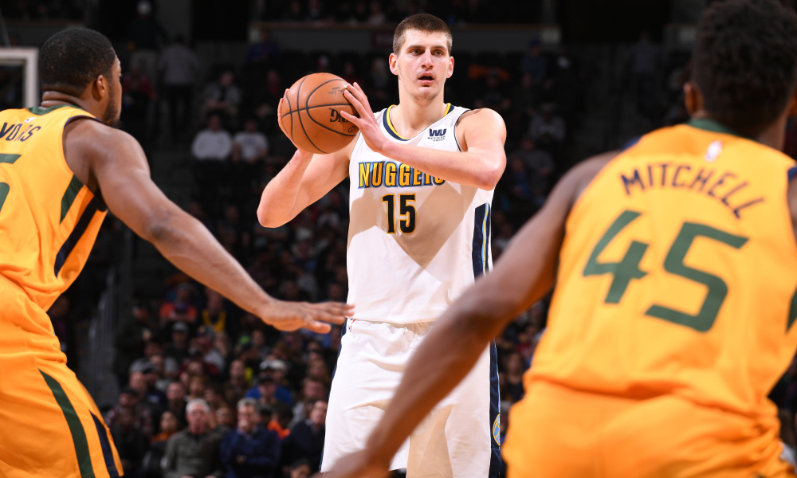
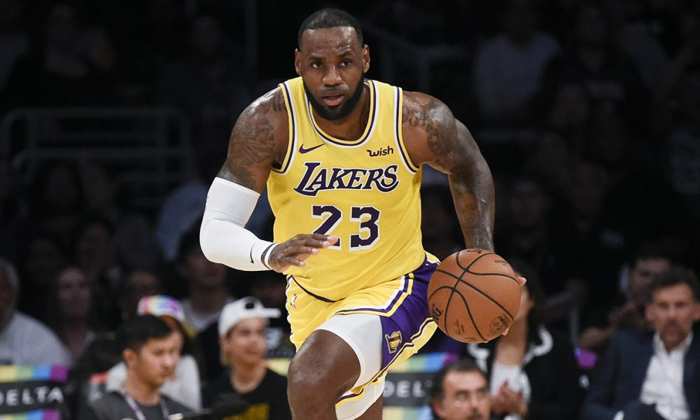

Game 1: Detroit Pistons at Brooklyn Nets
My Pick:
Brooklyn Nets
Why I'm Rolling with them:
Detroit played last night and lost a close one to the Celtics. Brooklyn lost a tough one to the Knicks as Caris LeVert had an off game. Detroit has started out 4-2, but they've got a negative point diffrential. Brookyln has a lot of players I'm high on, and although Detroit has been a tough matchup for them already this season, when they lost 103-100, that was in Detroit. This is at home, on a day of rest, and they havent traveled since the 27th. There's a lot of unknowns on the table right now, but I'm gonna take Brooklyn, 107-103.
Game 2: Indiana Pacers at New York Knicks
My Pick:
Indiana Pacers
Why I'm Rolling with them:
This will be an interesting matchup. Oladipo vs Tim Hardaway Jr is a pretty clear edge to the Pacers, however the Pacers struggled last game against the Blazers, and while I'm not expecting Sabonis to only get 6 points again, the whole bench getting 15 is a very low number. Conversely, the Knicks have Enes Kanter off the bench, a certified double double machine. That will be an interesting matchup between two top-tier bench centers. Ntilikina has had back to back 15+ point games, and has been shooting more 3's this year. If he can sustain his defensive prowess while carrying an increased offensive load, the Knicks should have a decent core once Porzingis comes back. But for now, I have to go with the Pacers, who take this one 116-108.
Game 3: Denver Nuggets at Chicago Bulls
My Pick:
Denver Nuggets
Why I'm Rolling with them:
When I was looking at this game I first thought it would be very high scoring, since both teams have had such awful defenses. But the Nuggets have actually been very good on defense so far, with Millsap showcasing his help defense talents and Jokic actually looking passable due to this. The Bulls on the other hand, are still bad. I have no doubt that Denver will be able to run up the score, while simultaneously limiting the bulls to a more mundane amount of points. Nuggets 117-108.
 Nikola Jokic may be the best offensive center in the leagueGame 4: Utah Jazz at Minnesota Timberwolves
My Pick:
Utah Jazz
Why I'm Rolling with them:
The Timberwolves have struggled greatly against good defensive teams, scoring only 95 points against the Bucks, 105 against the Raptors, and 108 against the Spurs. This doesn't bode well for their matchup against Utah, who last year was the top defensive team by a large margin when Gobert was playing. Butler should be able to limit Mitchell's effectiveness to a ceratain extent, but Utah has expanded their offense, involving their centers on more rolls and oops to get Gobert more involved on the offensive end. The Jazz are going to be too strong for this Wolves team, as the Jazz win 112-107.
Game 5: Dallas Mavericks at Los Angeles Lakers
My Pick:
Los Angeles Lakers
Why I'm Rolling with them:
The hardest part about making these predictions is the variance of the Los Angeles Lakers. I am yet to predict which version of them we will see, and it feels like tonight is no different. However, there are some positives. The game is at home, and the Laker's lineup matches up nicely against the Mavs. It will be interesting to see how Doncic fares against Lebron, but I am more excited to see the battle between two athletic centers in Jordan and McGee, who have both looked good for their new squads this year. The Lakers take it, 120-116.
 Lebron James carries the ball up the courtGame 6: San Antonio Spurs at Phoenix Suns
My Pick:
San Antonio Spurs
Why I'm Rolling with them:
Devin Booker is still out, and the Spurs still have their All-NBA duo of DeRozan and Aldridge. That's enough for me to make this a sure pick, I think that the Spurs are once again going to make the playoffs and this Suns team is not going to prove an obstacle on the way there. TJ Warren has been playing great off of the bench, and I think that he'll continue to be good tonight. That still shouldn't make a difference. San Antonio will win this one convincingly, 122-110.
Game 7: New Orleans Pelicans at Golden State Warriors
My Pick:
Golden State Warriors
Why I'm Rolling with them:
Klay Thompson had started off this year very poorly, hitting only 5 threes in the Warrior's first 7 games. He then broke the record for the most made 3's in a single game, knocking down 14 on 24 attempts. That's Golden State's 3rd best player, maybe even 4th best depending on how much someone values Draymond Green. The point I'm trying to make, is that there will be very few games where I don't take the Warriors to win it, and that isnt changed here. Anthony Davis is back in, but I'm not sure how big of a difference that will make, as Golden State pulls away, 132-120.